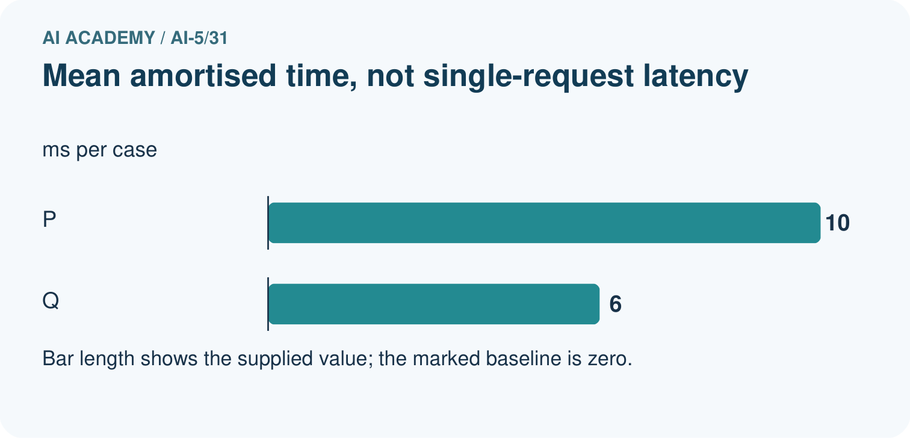
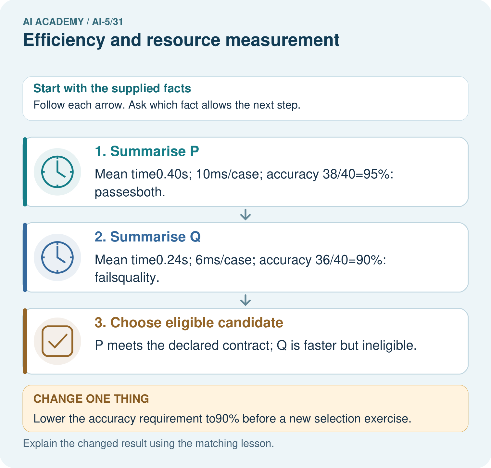

AI Academy · Level 5 · Grade 10 · Week 31 · Student lesson
Efficiency and resource measurement
Learn to understand, design, build, test and explain AI systems responsibly.
Project: Image-pattern Network Investigation
Before you start
Why should two models be evaluated on the same examples and subgroup mix before comparing their accuracy and speed?
Plan time to read, investigate and explain. Keep predictions separate from observations.
Student lesson · 1 of 14
Your mission
Your learning target
I can calculate throughput and amortised time per example from repeated timings.
I can count dense-network parameters and distinguish storage from peak memory.
I can compare resource use under fixed quality and measurement conditions.
Remember before reading
Close your notes first. A rough first answer helps us choose the right starting point; it is not a score for your ability.
Without opening the old lesson, explain one key idea from Dataset shift in neural models. Give an example and a mistake that the idea helps you avoid.
Without opening the old lesson, explain one key idea from Transfer learning. Give an example and a mistake that the idea helps you avoid.
Without opening the old lesson, explain one key idea from Sequence representations. Give an example and a mistake that the idea helps you avoid.
After trying, check the relevant lesson or ask your teacher. Change the part of your explanation that the evidence shows was wrong.
This week you will practise:
Calculate throughput and amortised time per example from repeated timings
Count dense-network parameters and distinguish storage from peak memory
Compare resource use under fixed quality and measurement conditions
Retrieve what you already know
Why should two models be evaluated on the same examples and subgroup mix before comparing their accuracy and speed?
This week’s end goal
By the end, I can explain efficiency and resource measurement using a traced example and a stated limitation.
Student lesson · 2 of 14
Notice the evidence
A neural model can be faster yet fail the task’s accuracy requirement. Training cost and prediction cost are different: training updates parameters, while inference uses the fitted model. Compare quality and resources together under a declared test, rather than calling a model efficient from one small number.
Use these invented classroom timings for models A and B. Each timed pass processes the same 100 preprocessed examples sequentially, one at a time, on the same device and precision. Start before the first prediction and stop after the final prediction completes. Loading and preprocessing are excluded for both. One untimed warm-up pass precedes three timed passes; the warm-up work must still be reported.
| Measurement | Model A | Model B |
|---|---|---|
| Pass 1 seconds | 2.0 | 1.2 |
| Pass 2 seconds | 2.2 | 1.1 |
| Pass 3 seconds | 1.8 | 1.3 |
| Correct on 100 validation cases | 92 | 90 |
The validation cases are the same for both models and are scored once each; repeating timing passes does not create 300 independent quality examples. No actual benchmark was run to produce this table.
Student lesson · 3 of 14
See how it works
Sort each set of three times and take the middle value. A’s median is 2.0 seconds per 100 examples; B’s is 1.2 seconds. Dividing by 100 gives amortised times of 0.020 and 0.012 seconds per example, or 20 and 12 milliseconds. Median-pass throughput is 100 / 2.0 = 50 examples per second for A and about 83.33 for B.
from math import isfinite
from statistics import median
def timing_summary(seconds, count):
if count <= 0 or not seconds:
raise ValueError("Need examples and timed passes")
if any(not isfinite(t) or t <= 0 for t in seconds):
raise ValueError("Times must be finite and positive")
middle = median(seconds)
ms_per_example = 1000 * middle / count
examples_per_second = count / middle
return middle, ms_per_example, examples_per_second
print(timing_summary([2.0, 2.2, 1.8], 100))
print(timing_summary([1.2, 1.1, 1.3], 100))The code assumes a positive integer example count and numeric times. A outputs (2.0, 20.0, 50.0); B outputs approximately (1.2, 12.0, 83.33). Retain full precision until display. The time reduction is (20 - 12) / 20 = 40 percent, while throughput rises by about 66.67 percent. These are different denominators.
Amortised time does not reveal the slowest request or a latency percentile. In a batched or concurrent workload, total time divided by count is not an individual request’s waiting time. Record per-request timings if the requirement concerns latency; keep batch size and concurrency explicit.
Connect the picture and the explanation
Point to the input, the deciding step and the result in this week’s visual. Explain the same step in ordinary words. A picture helps when you can say what each part represents.
Student lesson · 4 of 14
Compare the cases
Compare a familiar case with a changed case
With at least 91 correct out of 100 and at most 25 ms amortised time required, which model qualifies? Calculate B’s time reduction relative to A and explain why the percentage throughput increase differs.
Change one thing in the pictured case
Change: Lower the accuracy requirement to90% before a new selection exercise.
Prediction: Both become eligible; Q has the smaller measured mean amortised time.
Reason: The acceptance contract changed; Q’s measured accuracy did not improve.
Student lesson · 5 of 14
Words that unlock the idea
| Word | Meaning |
|---|---|
| Latency | Elapsed time for one request from a declared start to completed response |
| Throughput | The number of completed examples processed per unit time |
| Parameter storage | The bytes used to store model weights and biases at a declared precision |
| Peak memory | The largest amount of memory in use during a measured operation |
Student lesson · 6 of 14
Follow a worked example
A faster result can miss the requirement
The requirements were set before inspecting these results. B is faster under this measurement but is not eligible under the quality rule. One hundred validation cases do not establish future accuracy; reserve independent final evaluation after choosing a model, and inspect relevant subgroup results.
Learn from the worked case
Cover the result before checking it. Say what is given, choose the procedure, and follow one step at a time. Then uncover the result and explain your first mismatch. Ask why a step is allowed, not only what number it produces.
A pictorial worked case: Efficiency and resource measurement
Compare speed and quality under the same case count and acceptance contract.
The facts we will use
Both evaluate40 cases. P times [0.32, 0.40, 0.48]seconds, 38 correct; Q times [0.20, 0.24, 0.28]seconds, 36 correct. Requireaccuracy>=93% and mean amortised time<=12ms/case.
All inputs and outcomes in this worked example are invented classroom data; no real model run is claimed.


Read the picture one step at a time
Why this result follows
Compare models on the same workload and apply every required condition. P meets both quality and time limits; Q’s speed does not compensate for missing the quality gate. Dividing total run duration by forty gives an amortised time per case. It does not measure the wait for one isolated request, which needs its own timed experiment.
What this example does not establish
Record hardware, batching, warm-up and variability; these supplied timings are toy measurements, not actual benchmark runs.
Student lesson · 7 of 14
Find and repair a mistake
A fully connected layer with m inputs and n outputs has m times n weights and n biases, assuming every output has one bias. A network with dimensions 4 to 3 to 2 has (4 times 3 + 3) + (3 times 2 + 2) = 23 parameters. At four bytes per parameter, its raw parameter payload is 92 bytes.
That is not the saved file size or peak runtime memory. A file can contain metadata, and inference also needs activations and buffers. Training may additionally store gradients and optimiser state. Record whether a memory measurement refers to the model, the process, an accelerator or the whole device. Parameter count alone does not establish speed.
Runtime alone does not establish energy use or carbon emissions either. Those require additional measurements and declared assumptions, such as power over time and the electricity source. Report what you measured rather than converting fewer parameters into an unsupported energy claim.
Locate the earliest unsupported step
Count weights, biases and total parameters in the 4 to 3 to 2 network. Calculate raw parameter bytes at four bytes each. Explain why this cannot be reported as peak training memory or an energy measurement.
Student lesson · 8 of 14
Practise together
For A and B, calculate median pass time, amortised milliseconds per example and median-pass throughput. State the measured boundary and one latency claim these numbers cannot support.
Practise with less help: Compare under requirements
Use workbook W2 for the connected example “Efficiency and resource measurement”. First fill the input and rule boxes. Try the middle steps before asking for a hint. After a hint, try the next step yourself.
| Plan | Do | Check |
|---|---|---|
| What is given? Which rule or procedure applies? | Record each intermediate step. | Does the result follow? What remains unknown? |
Explain your trace to a partner. Your partner points to one step to check. Swap roles on the next case. Each person writes their own explanation.
Check your reasoning
Use the worked case for Efficiency and resource measurement. Proposed explanation: “Fewer parameters always means faster”. Decide whether this explanation is supported. Point to the step or supplied fact that decides; explain your repair if needed.
Answer on your own before discussion. If you are unsure, say which step you need help with.
Explain the picture
Why is 10ms/case not necessarily a single-request latency? Point to the relevant step in the picture, then write the changed result and the rule or evidence that supports it.
This is supported practice. Keep the separately named independent case for an attempt before feedback.
Student lesson · 9 of 14
Run the investigation
Predict, investigate and preserve the evidence
With at least 91 correct out of 100 and at most 25 ms amortised time required, which model qualifies? Calculate B’s time reduction relative to A and explain why the percentage throughput increase differs.
from math import isfinite
from statistics import median
def timing_summary(seconds, count):
if count <= 0 or not seconds:
raise ValueError("Need examples and timed passes")
if any(not isfinite(t) or t <= 0 for t in seconds):
raise ValueError("Times must be finite and positive")
middle = median(seconds)
ms_per_example = 1000 * middle / count
examples_per_second = count / middle
return middle, ms_per_example, examples_per_second
print(timing_summary([2.0, 2.2, 1.8], 100))
print(timing_summary([1.2, 1.1, 1.3], 100))| Record | Your evidence |
|---|---|
| Given input and fixed rule | |
| Prediction before checking | |
| Actual result, or “not run” | |
| First mismatch and one explanation | |
| Boundary or missing input and expected response |
On paper, trace the supplied procedure. If code is provided, predict before running it in a local practice file. Never write an expected answer as though it were an observed run.
Plan → try → check
Before trying: what do I expect, and why? While trying: which step could first go wrong? Afterwards: what did I actually observe, and what should change? Keep “not run” if you only traced the procedure.
Student lesson · 10 of 14
Build your understanding
Explain → apply → challenge
For A and B, calculate median pass time, amortised milliseconds per example and median-pass throughput. State the measured boundary and one latency claim these numbers cannot support.
Count weights, biases and total parameters in the 4 to 3 to 2 network. Calculate raw parameter bytes at four bytes each. Explain why this cannot be reported as peak training memory or an energy measurement.
A runs on one device with batch size 1; B runs on another with batch size 32. Only B’s fastest trial and the winning training run are reported. Explain how to compare and report the results fairly.
Student lesson · 11 of 14
Connect your project
Add a labelled efficiency and resource measurement evidence sheet to Image-pattern Network Investigation. Show how you can calculate throughput and amortised time per example from repeated timings. Use the supplied fictional case and keep its inputs, intermediate steps, calculation or prediction, and limitation. Connect this record to last week’s record; a matching answer without a trace is insufficient.
| Project evidence | Record |
|---|---|
| Component and version | |
| Inputs permitted at prediction time | |
| Trace and comparison with earlier work | |
| Failure, limit and human review |
Evidence for your project
For your Image-pattern Network Investigation, save the input, procedure, observed result and limitation of this check. Label this worked example as practice; use a different, previously unreviewed case when checking independent understanding.
Student lesson · 12 of 14
Show what you know
Record model and code versions, input size, device, precision, batch size, concurrency, warm-up, timed boundary, repetitions and raw results. Alternate model order where practical, check background load and wait for computation to finish before stopping a timer; queued accelerator work may finish after the host call returns. Report cold-start behaviour separately when it matters.
Keep training and inference costs separate, and include unsuccessful trials in the total experiment budget. Changes chosen using validation need untouched final evaluation. Next week assembles a network experiment record so another person can understand and repeat the comparison.
A runs on one device with batch size 1; B runs on another with batch size 32. Only B’s fastest trial and the winning training run are reported. Explain how to compare and report the results fairly.
Student lesson · 13 of 14
Study a complete case
Complete evidence record
A faster result can miss the requirement
Follow the input through the stated procedure to its result. Cover the result first, predict it, then explain every intermediate step. The text/table accompanies the figure so the example can be read without colour.
Student lesson · 14 of 14
Try a new case independently
Independent case: Evaluate a new case independently
For 50 shared validation cases, P has times 0.6, 0.5, 0.4 seconds and 47 correct; Q has 0.3, 0.4, 0.5 seconds and 45 correct. Require at least 92 percent accuracy and at most 12 ms amortised time. Give median times, amortised times, throughput, accuracy and eligible models. A separate dense network has dimensions 3 to 2 to 1 with one bias per output: find its parameter count and raw bytes at four bytes each.
Attempt this case before feedback. Record any help. Earlier examples below are further practice; a case already practised with feedback cannot establish fresh transfer.
Attempt this without hints
For 50 shared validation cases, P has times 0.6, 0.5, 0.4 seconds and 47 correct; Q has 0.3, 0.4, 0.5 seconds and 45 correct. Require at least 92 percent accuracy and at most 12 ms amortised time. Give median times, amortised times, throughput, accuracy and eligible models. A separate dense network has dimensions 3 to 2 to 1 with one bias per output: find its parameter count and raw bytes at four bytes each.
Record support used: none, hint or teacher explanation. After feedback, a different case is needed to demonstrate independence.
Use feedback to improve
Attempt the independent case before hints. Record whether you worked alone, used a hint or followed a model. After feedback, fix the first unsupported step and explain why it changed. A later check uses a changed case, not a copied answer.